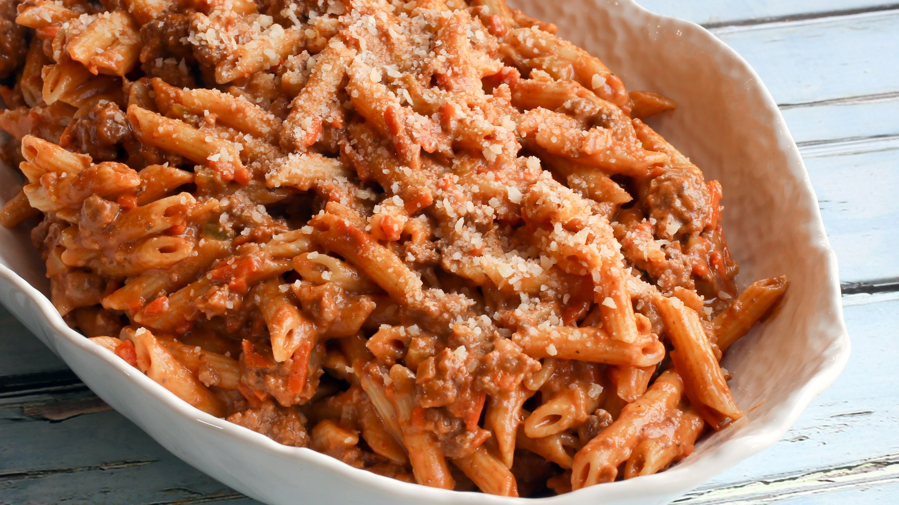

Pasta with Meat Sauce

Description
A versitile and easy recipe that is one of my go to delicious dinners.
Ingredients
- 1 lb ground beef
- 1/2(14oz) jar tomato sauce
- 1/2 box (8oz) pasta
- 1 clove garlic, minced
- 1/2 onion,diced
- 3 baby portabella mushrooms, sliced
- a few tablespoons olive oil
- 2 oz shredded cheese
Steps
- Follow the instructions for the timing and water amount on the pasta box and start boiling water.
- Once the pasta is cooking, heat up a few tablespoons of olive oil on medium-high heat in a skillet.
- Place the ground beef in the skillet and break it up into small pieces.
- Add garlic, mushrooms and onion.
- Cook until the beef is almost fully browned then add tomato sauce and stir contents of skillet.
- Turn heat down to medium-low and leave sauce until it starts to bubble.
- Strain pasta.
- After portioning pasta and meat sauce onto plate, add shredded cheese to taste.
Alternatives
Ground Chorizo
Same cooking process as ground beef, just adds a little more kick to the dish and has a great flavor
Sausage
Sausage is a little more complicated and has more steps. Replace steps 3-5 with these steps below:
- Place sausage in skillet and cook almost through, some pink still in middle of sausages.
- Take sausages off and let sit for 4-5 minutes. Then slice sausage into piecess about 3/4 in thick.
- Pour another few tablespoons of olive oil onto pan. Add sausage slices, garlic, mushrooms, and onions.
- Cook until pink gone from sausages then add tomato sauce.
Image credit
:max_bytes(150000):strip_icc():format(webp)/penne-with-creamy-meat-sauce-22-56a8c1565f9b58b7d0f4d5e5.jpg){kind=link}